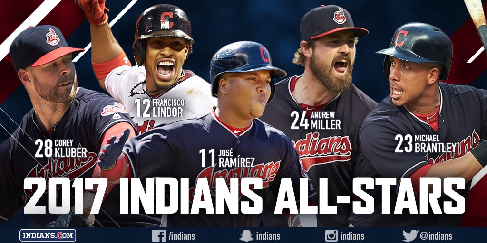

The Major League Baseball All-Star Game, also known as the "Midsummer Classic", is an annual professional baseball game sanctioned by Major League Baseball (MLB) and contested between the all-stars from the American League (AL) and National League (NL). All-Stars are selected by fans for starting fielders, by managers for pitchers, and by managers and players for reserves.
The game is usually played on the second or third Tuesday in July, and is meant to mark the symbolic halfway point of the MLB season (though not the mathematical halfway point, which, for most seasons, falls within the previous calendar week). Both leagues share an All-Star break, with no regular-season games scheduled from the day before through two days[1] after the All-Star Game. Some additional events and festivities associated with the game take place each year close to and during this break in the regular season.
